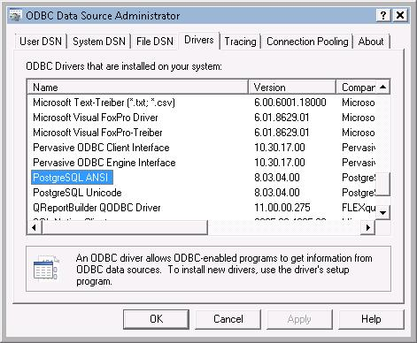
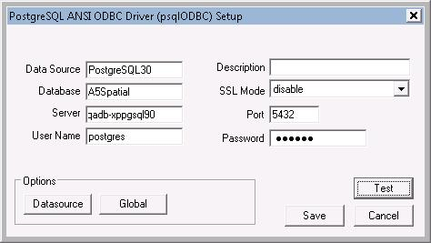
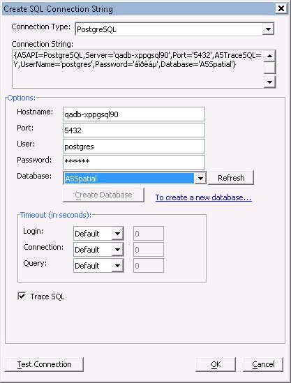
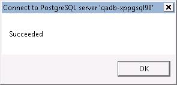

How to configure a Postgres connection
- You must install the 32-bit ANSI version of the PostgreSQL client.
- When configuring data sources on 64-bit systems you must use the 32-bit version of the ODBC Data Source Administrator. This is applicable for ALL ODBC drivers we don�t wrap directly.
- In order to verify that the driver is properly installed (for all ODBC drivers and extension drivers - meaning everything except for Oracle, DB2, and MySQL) on 64-bit systems, you must use the 32-bit version of the ODBC Data Source Administrator.
- For all servers, clients must also be granted access to the server. Problems with this will be identified in trying to create a DSN using ODBC, but�
- In all cases, the server must open the appropriate firewall port (they vary by database � see the connection string dialog for defaults � and they can be overridden, which is often recommended).
- For PostgreSQL, this also requires editing of the file pg_hba.conf in the server install�s data directory (located under PostgreSQL - for example c:\Program Files\PostgreSQL\9.0\data on 32-bit Windows XP).
Example
To be sure that the 32-bit ANSI driver is installed, please look at the drivers tab of the 32-bit ODBC Administrator:
Next test the PostgreSQL driver by creating and testing a DSN using the ODBC Data Source Administrator:

Follow the same steps in the Alpha Anywhere Connection String dialog:

Proof of the pudding:
